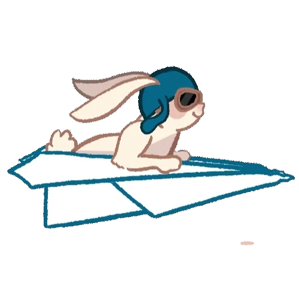

Harsh Raj
Ph.D. Research Scholar
Department of Electronics and Electrical Engineering
Indian Institute of Technology Guwahati
Professional Summary
Active Ph.D. Research Scholar in the Department of Electronics and Electrical Engineering at the Indian Institute of Technology Guwahati. Highly interested in modeling, analyzing, and optimizing next-generation wireless communications systems. Primary expertise lies in Joint Sensing and Communication (ISAC), Reconfigurable Intelligent Surfaces (IRS), and Machine Learning applications for cellular networks.
Research Interests
Integrated Sensing and Communication (ISAC)
Wireless Communications
Machine Learning for Wireless Systems
Beamforming
Signal Processing
Convex Optimization
Deep Learning
MIMO Systems
Beyond 5G / 6G Networks
Education
| 2022 — Present |
Ph.D. in Electronics & Electrical Engineering Indian Institute of Technology Guwahati Doctoral Thesis research focusing on Intelligent Reflecting Surface (IRS)-assisted ISAC systems employing Non-Orthogonal Multiple Access (NOMA) under Dr. Manoj B. R. |
| 2020 — 2022 |
M.Tech. in Communication & Signal Processing Indian Institute of Technology Ropar M.Tech. Dissertation project on Deep Learning-based Image Super-resolution under Dr. J.S. Sahambi. Completed core coursework on random processes, ML, and digital communication receivers. |
| 2015 — 2019 |
B.E. in Electronics & Communication Engineering University Institute of Technology Burdwan Undergraduate engineering curriculum covering fundamentals of digital electronics, electromagnetic fields, analog communications, signal processing, and laboratory testing. |
Teaching Assistant Experience
| EE 331 / EE 3002 | Principles of Communication Guided students on baseband analog/digital modulation techniques, spectral efficiencies, and receiver noise characteristics. |
| EE 632 | Advanced Topics in Communication Systems Assisted postgraduate scholars with channel estimation equations, convex optimization solvers, and reconfigurable surface modeling. |
| EE 337 | Fundamentals of Wireless Communications Provided tutorials and homework solutions covering multipath Rayleigh and Rician fading envelopes, Doppler spreads, and MIMO channel capacities. |
| EE 530N | Digital Communications Conducted grading, assignments coordination, and solved tutorial worksheets on matched filtering, symbol detection, and error bounds. |
| EE 101 | Basic Electronics (Tutorial) Conducted weekly discussion sessions for first-year engineering students covering operational amplifiers, BJTs, and diodes. |
| EE 102 | Basic Electronics Laboratory Instructed and evaluated lab groups conducting experiments on signal generators, rectifiers, filter circuits, and operational amplifier configurations. |
| EE 626 | Pattern Recognition & Machine Learning Supported computer lab exercises involving PCA dimensionality reduction, support vector machines (SVM), K-means, and convolutional layers. |
Skills & Proficiencies
| Expertise Areas |
Signal Processing
Wireless Channels
MIMO Arrays
Beamforming
Convex Optimization
Target Detection
|
| Software & Code |
MATLAB
Python
PyTorch
Jupyter
LaTeX
|
Awards & Fellowships
| 2022 — Present | Ministry of Education Doctoral Fellowship Awarded national fellowship by the Government of India for pursuing Ph.D. research at IIT Guwahati. |
| 2020 | Qualified GATE ECE Exam Secured rank in top percentiles in the national-level Graduate Aptitude Test in Engineering. |
Publications
| [J1] Journal |
NOMA-Assisted ISAC System: Downlink and Uplink Performance in Rician Fading Channels I. Agrawal*, H. Raj*, and B. R. Manoj IEEE Transactions on Cognitive Communications and Networking, vol. 12, pp. 3073-3087, 2026. (* Equal Contribution) |
| [C1] Conference |
Cascaded Channel Statistics and Target Detection Analysis for IRS-Assisted ISAC Employing NOMA H. Raj and B. R. Manoj In Proc. IEEE National Conference on Communications (NCC), IIT Delhi, India, Mar. 6–9, 2025. |
| [B1] Book Chapter |
Machine Learning for Wireless Communications: Applications and Security B. R. Manoj*, N. M. Baishya*, and H. Raj* Springer Chapter in "Next-Generation Wireless Systems: Fundamentals and Applications," Transactions on Computer Systems and Networks, Springer, Singapore, pp. 309-368, 2025. (* Equal Contribution) |
| [C2] Conference |
On the Performance of IRS-Assisted SSK and RPM over Rician Fading Channels H. Raj, U. Singh, and B. R. Manoj In Proc. IEEE 99th Vehicular Technology Conference (VTC-Spring), Singapore, Jun. 24–27, 2024. |
Research Projects & Software Code
All simulation source codes, reconfigurable array modeling scripts, and the interactive web-based simulator are hosted on my projects page. Please refer to Projects & Software Dashboard.